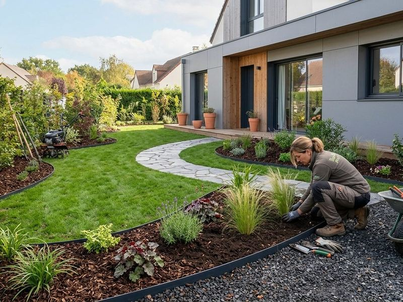
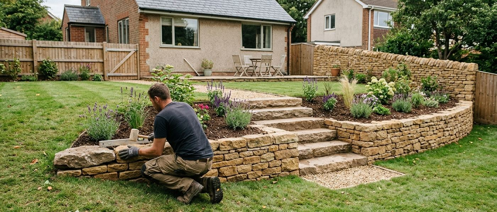
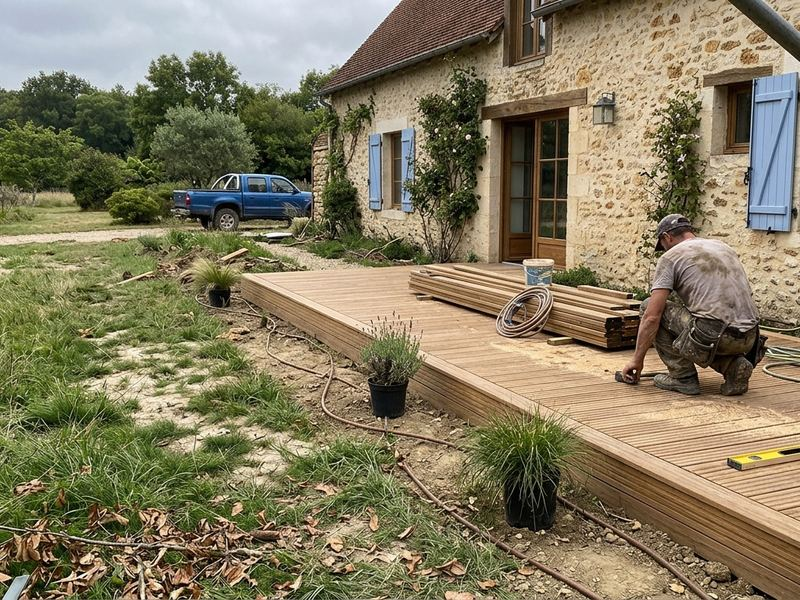
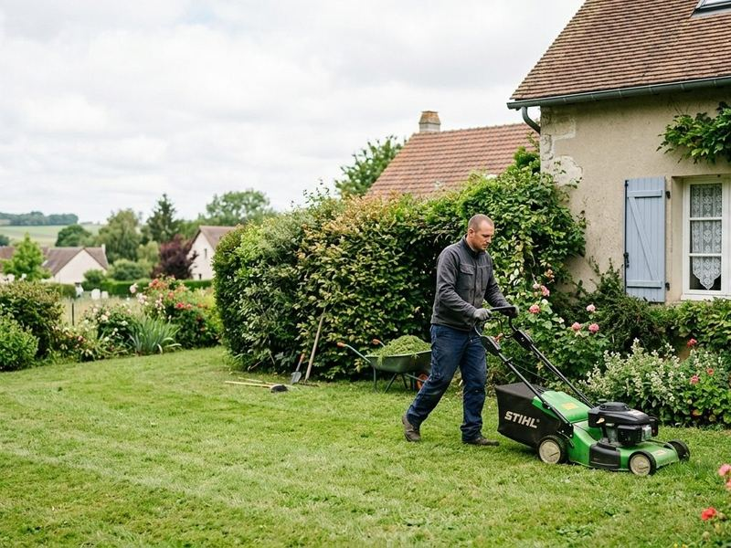
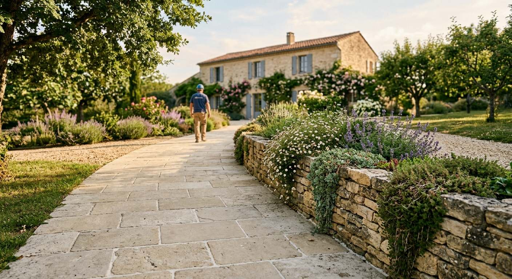

01Création de jardins
Conception et aménagement de votre jardin, du plan à la plantation.
En savoir plus →Paysagiste à Saint-Germain-lès-Corbeil (91)
EIDYL PRO est une entreprise d'aménagement paysager à Saint-Germain-lès-Corbeil, en Essonne. Appelez-nous pour parler de votre projet.

Nos prestations
Quatre domaines d'intervention pour créer et garder un beau jardin.

01Conception et aménagement de votre jardin, du plan à la plantation.
En savoir plus →
02
04Tonte, taille et suivi régulier pour un jardin net toute l'année.
En savoir plus →À propos
EIDYL PRO est une entreprise d'aménagement paysager basée à Saint-Germain-lès-Corbeil, en Essonne.
Elle est dirigée par Clement Konc.

Contact
Appelez EIDYL PRO ou envoyez votre demande de devis en ligne.
© EIDYL PRO · Saint-Germain-lès-Corbeil (91) · Maquette de démonstration